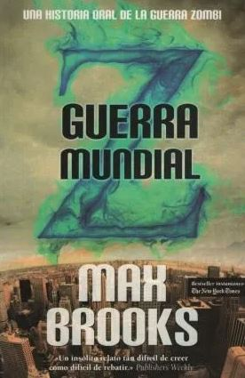

Guerra mundial Z.
- Título: Guerra mundial Z.
- Autor: Max Brooks
- Editorial: -
- Año de primera edición: 2006
- Género: Horror/ Apocaliptico
- ISBN: -
Sinopsis
Un narrador anónimo transcribe los relatos que logró recolectar alrededor del mundo luego del apocalipsis zombi. El mundo en general ha sobrevivido a la plaga y la ha controlado lo suficiente como para comenzar a poner en marcha la sociedad nuevamente. Este narrador, encargado de realizar un informe histórico, nos revela la parte censurada de su informe, con los relatos de muchos supervivientes en todas partes del mundo. Cada capítulo es un relato distinto, contado por un superviviente distinto y que, claramente, ha vivido la plaga de una forma única y particular. Dividiendo a grandes rasgos el libro en secciones se cuenta el inicio de la plaga, la guerra que se declaró a los muertos, como se fue de a poco controlándola, los planes que se desarrollaron para sobrevivir en distintos pueblos o países, y un largo etc. hasta el punto en donde se encuentra el mundo actualmente.
Opinión personal
Bien… ¿Cómo comienzo esto sin enredarme ni olvidar todo lo que quiero comentar? Guerra mundial Z es un librazo, no puedo ponerlo en otras palabras. Desde ya tengo que declarar que si gustan de las historias post apocalípticas o de zombis es un libro obligado, no perdería oportunidad de recomendarlo. Bien, ya he dicho eso… ahora si, al libro. Lo primero que me gustaría destacar es la originalidad de Brooks en cuanto al género. GMZ no es la típica historia de un grupo de sobrevivientes encerrados en algún lugar como un shopping o una base militar. GMZ cuenta la historia de la invasión desde el punto de vista de una gran variedad de personas y vista desde el futuro hacia el pasado. Es decir, se cuenta todo desde una perspectiva global, además de no ser el clásico festín de sangre y tripas de casi cualquier historia Z. Aquí se muestra como la invasión afectó en distintos niveles a las personas y la sociedad. Hay historias muy personales, historias “de negocios”, de lealtad, amor, deber profesional, historias de guerra, de supervivencia solitaria o en grupos, desobediencia militar, guerras civiles y muchas más. Sí, hay zombis comiendo a gente que no ha logrado escapar, pero es lo de menos y eso es lo que me ha gustado tanto de este giro. Los relatos se enfocan mucho más en saber cómo se logró sobrevivir ya sea en grupos o solos, qué se hizo desde el punto de vista de toda la humanidad y las distintas sociedades, culturas y poder de cada país. Como cada persona quedó marcada a fuego por la plaga. Las historias de Hollywood nos han encasillado mucho en Estados Unidos, donde conseguir un arma es tan fácil como ir a comprar caramelos y la mayoría de población tiene una pero ¿Qué pasa en países donde el acceso a las armas no es tan fácil? ¿Es lo mismo sobrevivir en una ciudad superpoblada que en una ciudad ubicada en un valle entre montañas? ¿Qué pasará y como se intentará seguir con la vida de siempre? Hay muchísimas preguntas que se podrían hacer y aun así habría capítulos que nos sorprenderían, ya que son cosas que nunca hubiéramos imaginado. Max Brooks rompió mucho con el estereotipo de estas historias y se arriesgó a crear algo muy distinto. Sí, admito que muchos capítulos repiten el aspecto militar pero vamos, que hasta el nombre del libro indica que hubo una guerra contra los zombis, queda claro que habrá muchos capítulos enfocados en esto. Sin embargo, aun repitiendo el tópico de entrevistas a soldados o ex soldados, Brooks logra crear cosas muy diferenciadas, bien construidas y con mucha lógica detrás de cada una. ¿Alguna vez se preguntaron si los campos minados realmente servirían de algo para detener a los muertos vivientes? ¿Qué pasa con los zombis que caen al fondo del mar, ya no pueden ahogarse, seguirán atacando? ¿Los planes y estrategias militares actuales servirán contra un enemigo incansable y sin emociones? Todas y muchas otras preguntas se las hizo el autor para escribir algunos de los mejores capítulos de este libro.
Puntos positivos.
- Mundo perfectamente balanceado entre ficción/fantasía y realismo.
- Personajes entrañables y realistas en la gran mayoría.
- Enorme variedad de temas tocados en todo el libro, todos bien desarrollados sin perder la suspensión de credibilidad.
- Originalidad espectacular con un género ya tan desgastado.
- Todo lo que se tiene en cuenta respecto a cómo afectaría de forma global una plaga zombi y cómo se la combatiría.
- Creación del mundo con eventos históricos propios, batallas, hazañas, matanzas y un largo etc.
Puntos negativos
- Pues, creo que no los he encontrado. Algún que otro capítulo no es tan bueno como el resto, pero no llega a ser algo malo.
Conclusión
De verdad, me encantaría seguir contando muchas cosas de este libro. Distintas clases de zombi, planes de guerra fallidos y exitosos, gente “salvaje” que vive sola en la naturaleza, gente que se cree zombi, barcos que zarparon pensando en escapar de la plaga y varias otras cosas más sobre el mundo, más que nada. Personajes entrañables, otros detestables, decisiones difíciles… pero bueno, aunque seguramente me esté olvidando de muchas cosas, creo que ya entendieron por qué me gustó tanto. Háganse un favor y lean esta obra, no se van a arrepentir.